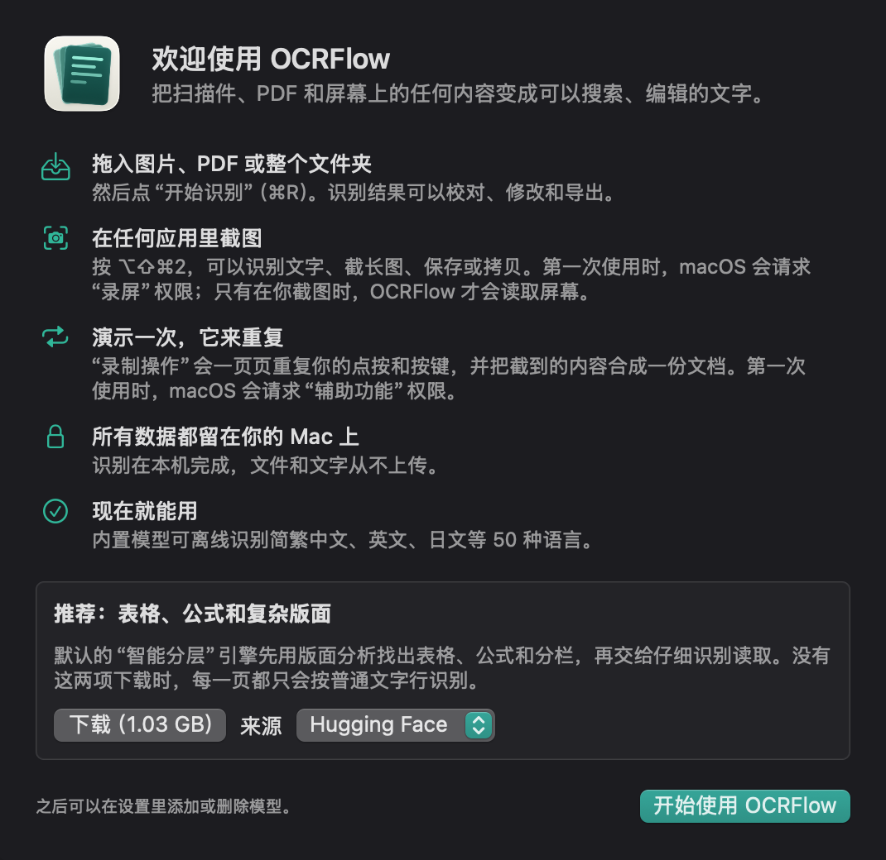

把屏幕上的任何内容变成文字。
批量识别扫描件和 PDF，在任何应用里截图，或者演示一次翻页，让 OCRFlow 替你整理出完整的文档。
下载 Mac 版免费开源 · macOS 15 或更高版本 · 支持 Apple 芯片和 Intel · 已签名并通过 Apple 公证

整个文件夹一起识别
拖入图片、PDF 或文件夹。下载可选模型后，表格、公式和分栏都会保留结构。可以导出 Markdown、纯文本、可搜索 PDF 或 Excel。
在任何应用里截图
按 ⌥⇧⌘2，选择区域或窗口，然后识别、保存或拷贝。长截图可以手动或自动滚动，边滚边拼接。
演示一次就够了
截一张幻灯片，再按 →。OCRFlow 会重复你的步骤，直到屏幕不再变化，然后把所有页面合成一份文档。
